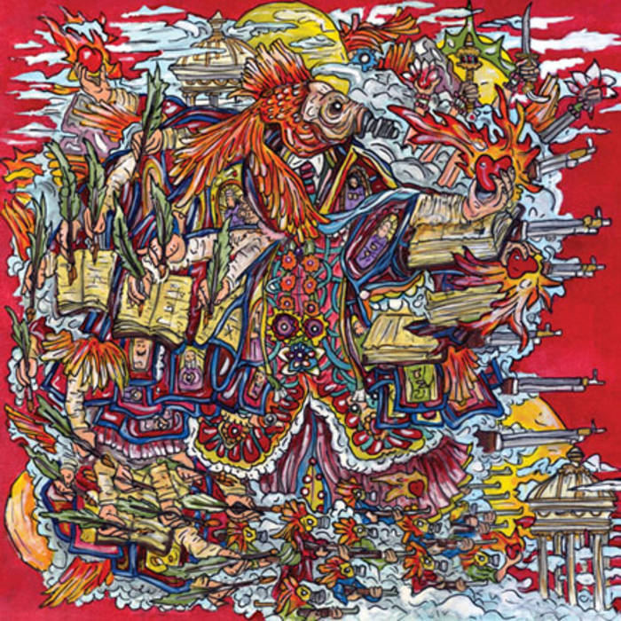

False Priest (2010)
Barnes experiments with elements of R&B in of Montreal's tenth album, False Priest. Solange Knowles and Janelle Monae are both featured on this album, adding to the R&B theme. There are a lot of strange, digressive elements in some songs that give this album a "wow" factor. It has the funky and dancey feel that of Montreal is known for.
Track Listing
- I Feel Ya' Strutter - 3:40
- Our Riotous Defects (feat. Janelle Monae) - 5:15
- Coquet Coquette - 3:44
- Godly Intersex - 3:31
- Enemy Gene (feat. Janelle Monae) - 3:37
- Hydra Fancies - 3:25
- Like a Tourist - 4:02
- Sex Karma (feat. Solange) - 4:02
- Girl Named Hello - 4:14
- Casualty of You - 2:59
- Around the Way - 4:33
- You Do Mutilate? - 6:52
Featured Track
Our Riotous Defects (feat. Janelle Monae)
I chose to feature this particular song because it is my favorite from the album. Barnes tells the story of meeting a woman through Alcoholics Anonymous, and how their love story turns sour when she turns out to be literally insane. The song is a monologue of sorts that describes ridiculous situations in a didactic tone. Janelle Monae wraps up the song, with her lovely voice echoing over soft flute tones until it fades out.
Lyrics
You are such a crazy girl
And I don't know why I even tried to make you love me.
I want it babe but you are just a
Crazy girl, you are such a crazy girl and I don't why
I even try to help you.
When I first met you at that al-anon meeting
You made that reference to "All Your Goodies Are Gone"
And even sang a verse, I was amazed how husky your singing voice was.
I wanted to talk to you so badly but I didn't know how to come on because
You've got that kind of beauty that makes people nervous.
I know it's fucked, but before we got together I even hooked up with one of your cousins
Just to feel somehow closer to you
Because I knew like you guys were best friends and you talked everyday
And it was thrilling to touch something that had touched you.
In my head you were like this goddess, but, in fact, you're just a
Crazy girl
You're just a crazy girl.
I don't know why I even try
To understand you (can't stand you).
Your ass is crazy girl.
You are so crazy girl
And I don't know why I even try
To relate to you (can't wait for you, it's too late for you).
My god I should have realized, on our second date
When you dragged me into the bathroom at Tanika's house
And screamed at me for like twenty minutes
Cause I had contradicted you in front of your friends,
I was like "oh"
And then later that night at my apartment
As punishment you killed my beta fish,
Just threw it out the window.
I did everything I could to make you happy.
I participated in all your protests,
Supported your stupid little blog,
Got a Bowflex, wore colored contacts to match your dresses,
Whatever your eyes caught I bought,
Still we fought
Like Ike and Tina but in reverse
Cause you're so
Crazy girl
You're just too crazy girl
And I don't know why I even try to understand you.
Well... I think you're crazy girl, you are so crazy girl
And I don't know why I even try to make sense of you.
Oh tell me why,
Someone tell me why my heart's real weird for you still.
I was like crazy fan over you
Like I'm all star struck over you
Like I'm getting handcuffed over you.
Now it's only fucked up.
[Janelle Monáe:]
My frame works in constant confusion.
I can't peel away the flowers of this psychic disturbance
And our riotous defects.